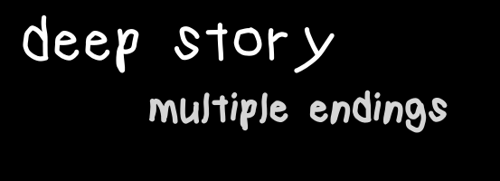
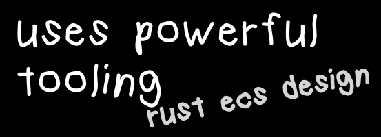
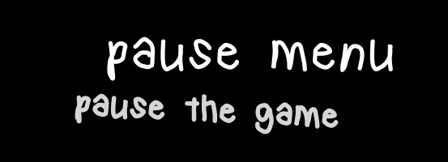

bytemunchdotdev slashprojects
theme toggle
shyte platformer
a platformer, written in rust using bevy. rather unserious.
what's this?
mr shyte goes for a walk, but oh no, a rude individual appears! guess it's time he killed everyone in his path.
this is a quick and dirty platformer i made to familiarise myself with the bevy game engine. open source.

using player action analysis the game will determine the best ending for your playstyle. with over 6 lines of text dialogue you're sure to be engrossed from the start.

built using rust with bevy, rapier2d, bevy_tweening, bevy-parallax, bevy_particle_systems and iyes_loopless. incredible graphics created in krita. sfxr sound effects, and an ardour backing track too!

there is a pause menu, so you don't have to play the whole game without pausing it. incredible!
enjoy
i hope you enjoy this shyte platformer (: